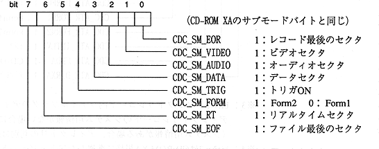

Title | Data | Data Name | No |
access macro | type | Description |
|---|---|---|
CDC_SUBH_FN (subh) | Uint8 | file number |
CDC_SUBH_CN (subh) | Uint8 | Channel number |
CDC_SUBH_SMMSK (subh) | Uint8 | Submode mask Pattern |
CDC_SUBH_SMVAL (subh) | Uint8 | Compare submodes Value |
CDC_SUBH_CIMSK (subh) | Uint8 | Coding information mask Pattern |
CDC_SUBH_CIVAL (subh) | Uint8 | Comparison of coding information Value |
Mask pattern: Bit pattern to be compared ・ Comparison place: Bit comparison value specified by mask pattern
The submode and coding information are determined to be equal to the comparison value after logical AND with the mask pattern.
| Conditional expression | (Submode & SMMSK) = SMVAL (Coding information & CIMSK) = CIVAL |

Title | Data | Data Name | No |
access macro | type | Description |
|---|---|---|
CDC_SCT_FAD (sct) | Sint32 | frame address |
CDC_SCT_FN (sct) | Uint8 | file number |
CDC_SCT_CN (sct) | Uint8 | Channel number |
CDC_SCT_SM (sct) | Uint8 | Submode |
CDC_SCT_CI (sct) | Uint8 | coding information |